AI on the pediatric ward
What it can do, where it fails, and how to check it.
Austin G. Meyer, MD, PhD, MS, MPH, MS, FACP, FAAP
Assistant Professor, Pediatrics
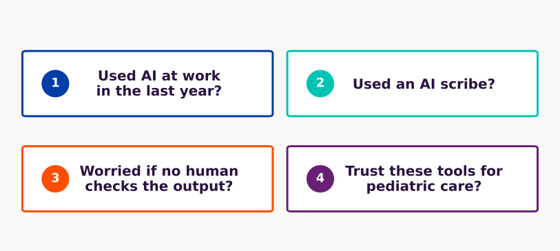
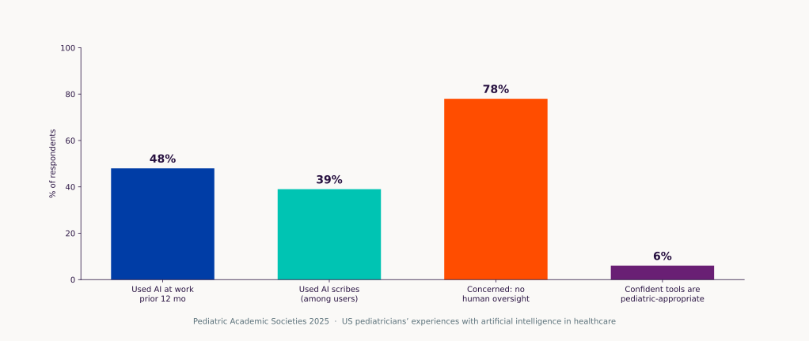
Invented cases
Every demo patient is made up.
No real notes in ChatGPT
Consumer ChatGPT, Claude, Gemini.
No names, record numbers, or pasted notes.
Check before you copy
Do not copy a dose or a citation into a note until you have opened the source.
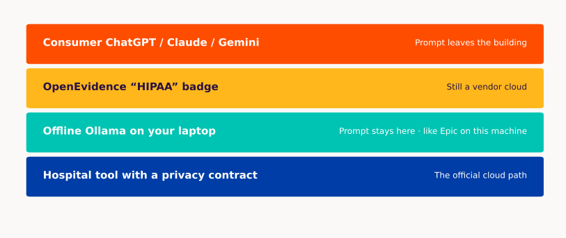
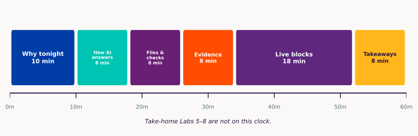
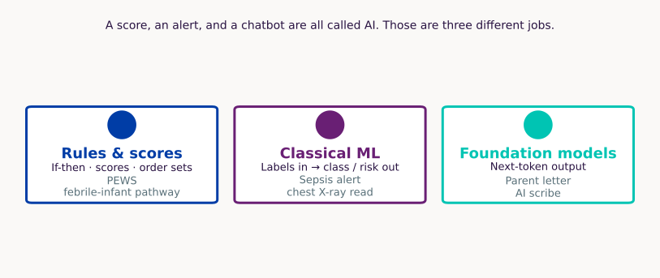
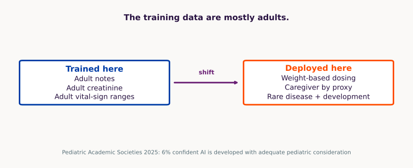
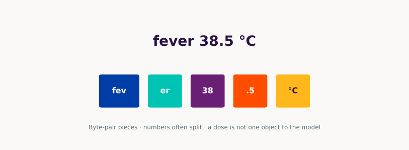
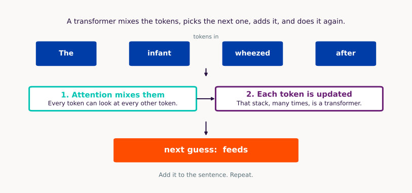
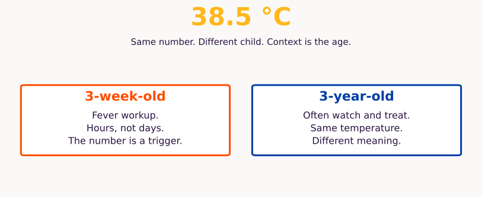
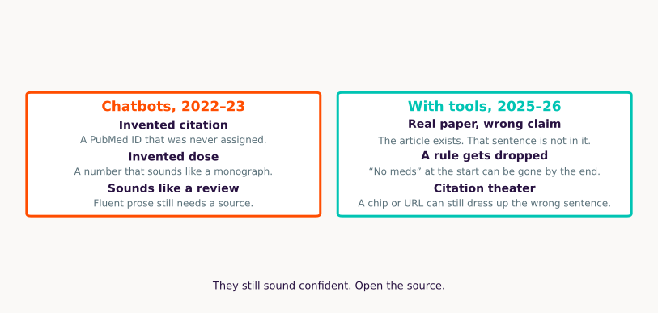
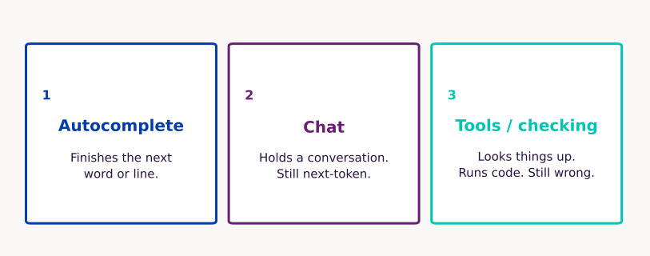
What can the model check before it answers?
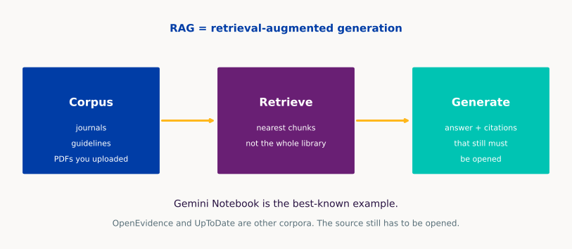
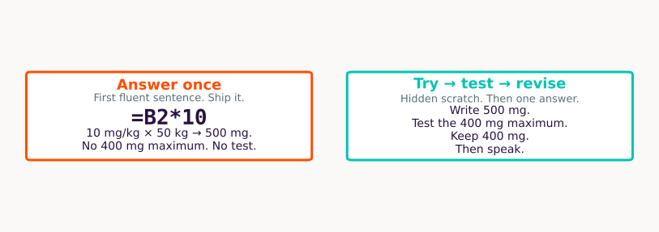
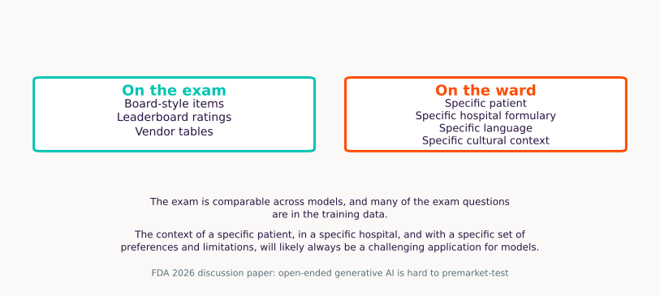
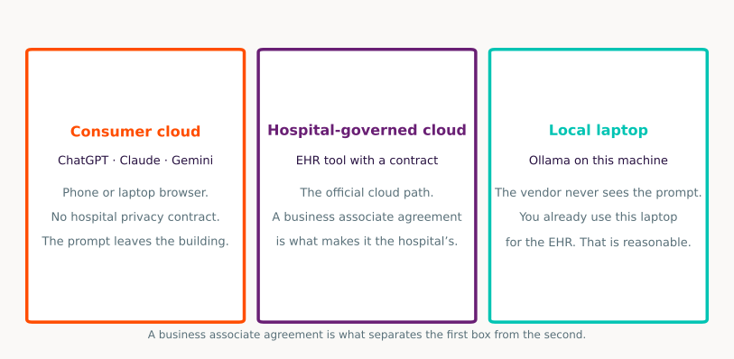
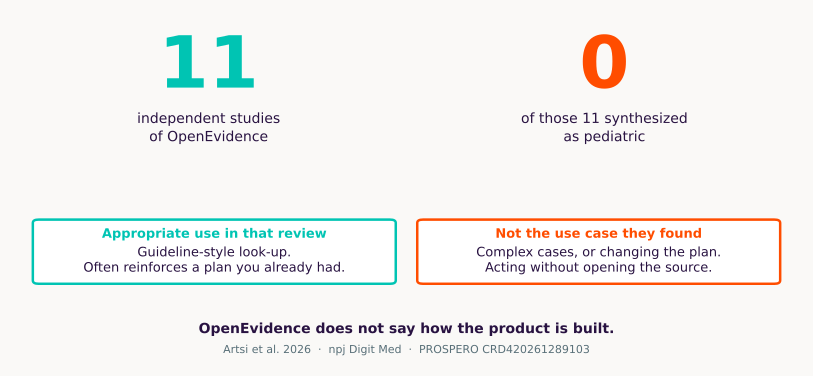
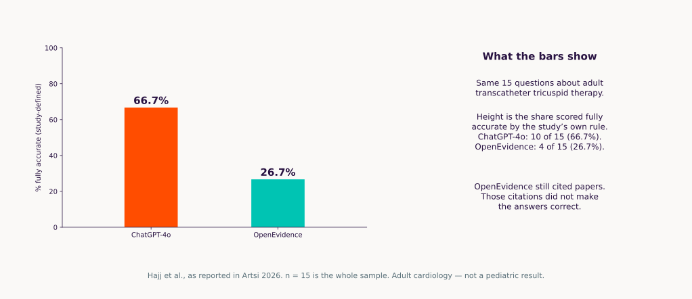
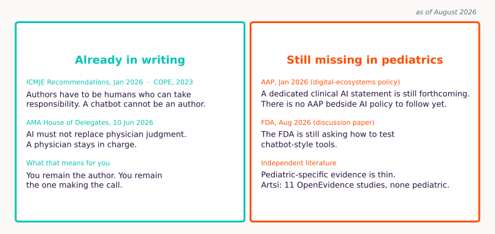
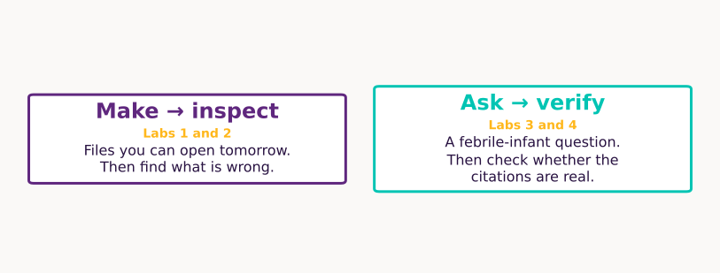
Make → inspect · Cursor
STEM.md — we wrote this
6-month-old former 36-week infant, day 2 of RSV bronchiolitis. SpO2 nadir 88% on room air, now 94% on 0.5 L NC. Taking 50% of feeds. Family wants a plain-language update. Night team wants a wean tracker.
family_update.docx
Plain-language letter
oxygen_wean_tracker.xlsx
No medication column
noon_conference.pptx
Citations not yet verified
Before: what will fail? · After: name one check.
Make → inspect · same Cursor window
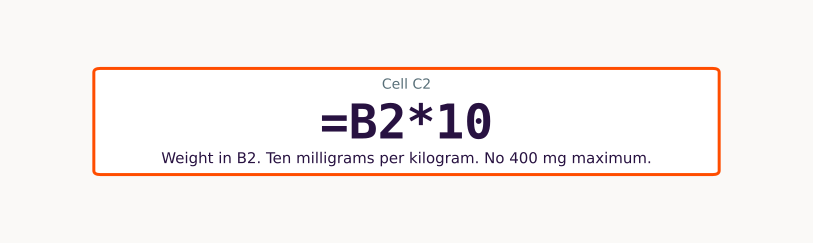
Before: what will fail? · After: name one check.
Ask → verify · browser
Previously healthy 3-week-old, 38.5 °C, well-appearing. Current AAP guidance on lumbar puncture? Quote the document. If you cannot quote, say so.
A · ChatGPT
Search off. Parameters only. Demand a PMID. Try to open it.
B · Gemini Notebook
One public AAP or CDC PDF you uploaded. Require a quote. Click the chip.
C · OpenEvidence
Licensed journals, if your NPI works. Click through. If blocked, B is enough.
Quoted?
Clickable?
Pediatric?
Asked for missing data?
Would I act?
Before: what will fail? · After: name one check.
Ask → verify · same ChatGPT tab, search still off
Eight Vancouver-style references on high-flow vs CPAP for bronchiolitis, 2018–2026. Include PubMed IDs.
Before: what will fail? · After: name one check.
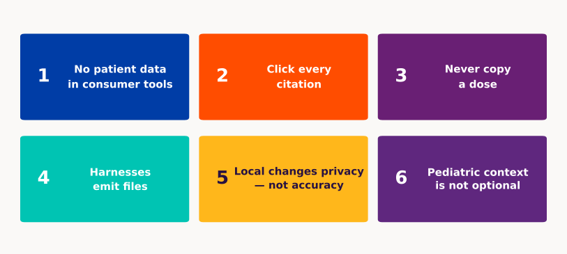
Where did the prompt go?
What source did it use?
What did I verify?
Questions
After the hour. Recipes in the handout.
Take-home · 5 of 8
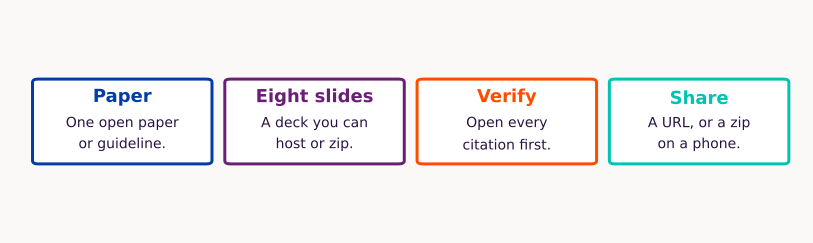
Take-home · 6 of 8
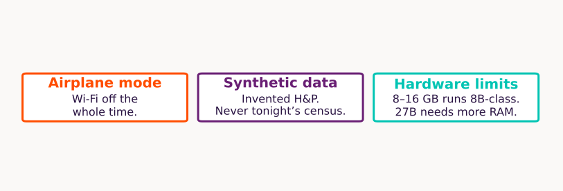
Take-home · 7 of 8 · files vs a paragraph
Same request in ChatGPT and in a harness. The product you want is the loop (files, tools, a check), not the chat box.
In an empty folder, create a single index.html that plots synthetic noon-conference attendance for eight weeks of residency (made-up counts, not real people). Let me type a week number to highlight that bar. No external APIs. Then confirm the file opens.
Take-home · 8 of 8 · public PDFs
Grounded Q&A over files you chose. Right tool for journal club and policy. Wrong tool for the census.
Upload public papers only. Ask something in the corpus. Ask something outside it — it should refuse. Click every citation chip.
If someone asks. Not on the clock.
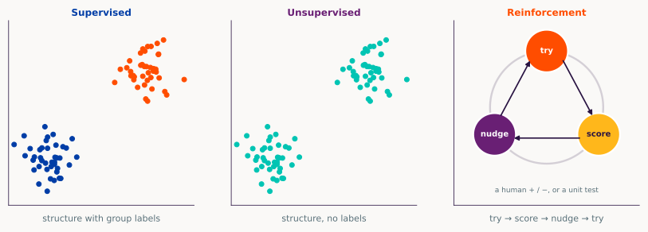
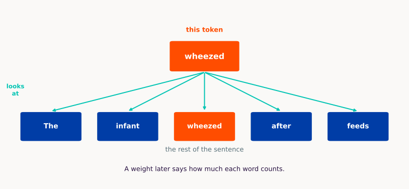
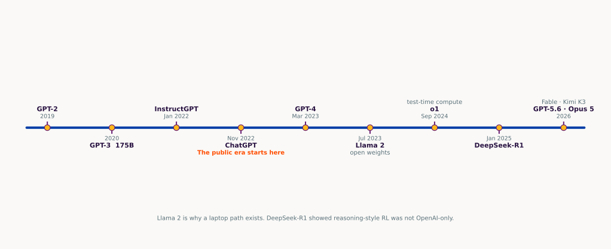
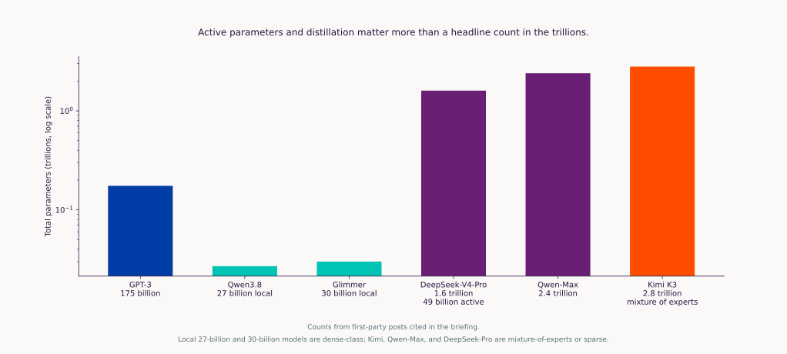
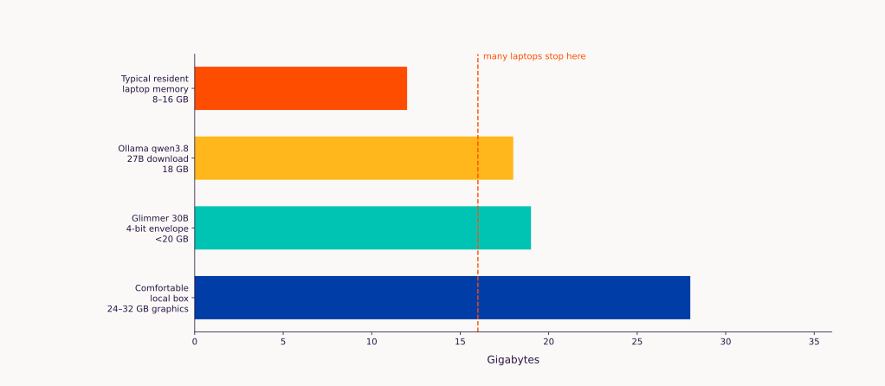
Judge the claims, data, code, and citations—not the fluency or confession.
ICMJE and Pediatrics still ask authors to name the tool. Naming it does not make the science more true.
as of August 2026
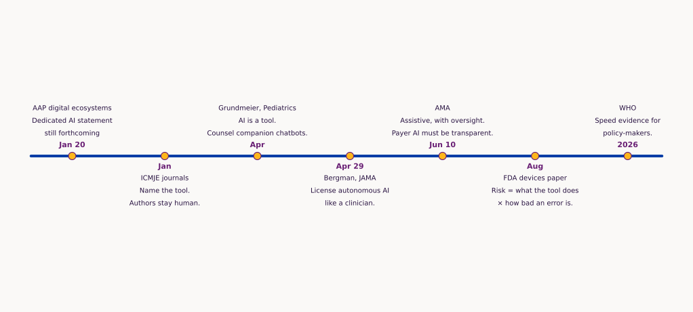